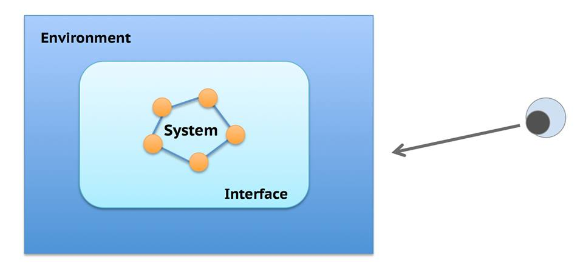

Computer Science 111: Operating Systems Principles
Winter 2015 Lecture 1 Scribe Notes - 01/05/2015
By: Andrew Lee, Maya Adkins, Michelle Chang
Course Overview
Course Website: cs.ucla.edu/classes/winter15/cs111
Course Textbook: Saltzer and Kaashoek, Principles of Computer System Design: an Introduction (2009)
Course Organization and Grading:
- 17 Lectures
-
Exams:
- 1 Midterm (100 minutes): Open Book & Open Notes
- 1 Final (180 minutes): Open Book & Open Notes
-
Assignments:
-
4 Labs (groups of 2 or less)
- Write a shell with performance features
- Kernel Hacking
- Writing a File System
- Distributed
-
2 Minilabs (solo)
- CPU Scheduling
- Virtual Memory
-
Design Problem:
- Work in groups of 2
- Oral Presentation and Written Report
-
Scribe Notes:
- Work in groups of 4 or less
- Make a webpage containing the notes for the day's notes using HTML5 or HTML4.1
- Due 1 week after chosen lecture
-
Paper:
- 2–3 page research/review paper
- Choose 1 topic from the list of topics that Professor Eggert will provide
| Total Grade Distribution |
| 1/9 |
Midterm |
| 2/9 |
Final |
| 1/3 |
Labs (1/12 each) |
| 2/15 |
Minilabs (1/15 each) |
| 1/12 |
Design Problem |
| 1/20 |
Scribe Notes |
| 1/15 |
Research/Review Paper |
Assignment Deadlines:
Assignments are due at 11:55pm on the due dates listed on the syllabus
here.
Submitting an assignment late will result in a lateness penalty of 2^(N - 1) points deducted from that assignment's score,
where N is the number of days after the assignment's due date.
What is an Operating System?
Operating System Headlines
Red Star 3.0: North Korea launches its own OS
2014-12-31 Sky News (UK)
Crouton for Chromebooks: Run Ubuntu in a browser tab
2014-12-28 liliputing
Samsung’s troubled Tizen software ready for prime time on TVs
2014-01-05 CNet
Quote from The Economist:
“We don’t offer a ready-made programme, but an entire operating system”
by Marina Weisbard, Germany Pirate Party, 2013-01-05
First, what is a System?
-
Oxford English Dictionary (1928):
- An organized or connected group of objects
- A set of principles, a scheme, a method, etc.
-
Etymology: σύστημα Greek for "an organized whole, government, or constitution"
Root: "set up with"
-
Textbook Definition (Section 1.A.2):
-
A set of interconnected components that has a specified behavior observed at the interface with its environment
-
We, the users, observe the system through the system's interface from the environment.

Now, what is an Operating System?
-
Encarta (2007)
- Master control program in a computer
-
American Heritage Dictionary, 4th Edition, 2000
- Software designed to control the hardware of a specific data processing system
in order to allow users and application programs to make use of it.
-
Wikipedia, Version 640779030, 2015-01-03
-
Software that manages computer hardware and software resources and provides common services for computer programs
Common Systems Problems
-
Incommensurate Scaling (Quantitative)
-
Diseconomies of Scale
- Definition: As a product grows larger, the more expensive per unit it is. This scaling can cause breakages in the product if the product becomes too large to support itself.
- Example: Star Network
A star network is a local-area network
that uses nodes to connect to other devices. As the number of nodes increases, the cost also
increases at an alarming rate. This is because there are more connections made with each
added node and the system therefore becomes more complex.
-
Example: Human Size Scaling
If we tried to stretch out the human body by a large amount, while still keeping the subject alive and well, we would run into a lot of problems. Depending on how we stretch the body, we could end up with an exponential increase in the amount of resources needed to sustain the body and in the amount of waste it will produce. This huge increase in costs will eventually cause the stretched body to fail, due to the diseconomies of scale.
-
Economies of Scale
- Definition: As a product grows larger, the cheaper it is by the unit. This scaling can cause waste when too much product is created, forcing us to dispose of the surplus product.
- Example: Pin Factory
Individuals could make their own pins by hand, but this process would be extremely inefficient.
Rather than hand-making each pin, those same individuals could build a pin factory that uses machines to produce more pins in the same amount of time at a reduced cost, resulting in an increase in efficiency.
-
Emergent Properties (Qualitative)
- Definition: properties that are not accounted for at time of creation that can cause problems at a later time
- Example: UCLA's new fast network
As the birthplace of the Internet, UCLA decided to upgrade its network to a faster speed and decided to route this new internet to student housing, for students to use for mainly academic purposes. This all sounds great, but an unforeseen problem (emergent property) appeared: students took advantage of this huge boost in bandwidth to pirate music, using programs like Napster. At one point, close to 80% of the network was being used to pirate music, and UCLA got lots of cease and desist notices from companies that it could not have expected at the creation of the network.
-
Example: Tacoma Narrows Bridge
This bridge was able to withstand strong winds, but these winds caused the bridge to wobble vertically. The creators of the bridge did not account for the resonance frequency of the bridge, causing the bridge to collapse into the Tacoma Narrows below, due to the wind causing the bridge to oscillate at the resonant frequency. This resonant frequency served as the emergent property, something that the creators did not account for during creation that caused problems down the line.
-
Propagation of Effects
- Definition: small changes made to one area can cause problems in other seemingly unrelated areas
-
Example: Japanese Text Encoding in a File System
Let's say Microsoft used UTF-8 to encode filenames on their servers, and some other company used S-JIS to encode their filenames. S-JIS is an encoding scheme for Japanese characters, where all characters come in sets of 1 or 2 bytes. The first bit in the set determines whether the character takes 1 byte (normal character) or 2 bytes (Japanese character). If Microsoft, obtained a file with a name encoded in S-JIS and tried to process the filename, they could end up with a problem, if there are any Japanese characters in that filename. This example shows how two seemingly separate systems can still affect each other.
-
Design Tradeoffs
- Waterbed Effect: solving one problem, but actually pushing the problem elsewhere or creating a whole new problem elsewhere, like a waterbed: you step on one end, bringing that part lower, but then a different part of the bed goes higher.
- Time-Space tradeoffs: An algorithm could take a lot of time, but use a small amount of memory. Conversely, an algorithm could run really quickly, but it could use a large amount of memory in execution.
- Time-Energy tradeoffs: A hardware component could help the system run faster, but its power requirements could be higher. Conversely, the component could be slower than other options, but have a lower power consumption requirement than those other components.
- Example: Sorting Algorithms
Some sorting algorithms work well when there is a small number of objects to sort (ex. bubble sort). However, when the number of objects grows, we start to look for algorithms that perform well with larger numbers of objects, at the cost of efficiency for smaller numbers of objects (ex. merge sort). This shows that when we make design decisions, there will be options where a certain component will excel in one area, but will be less efficient than other components in other areas.
-
Complexity
- Systems and system components get more complex as time goes on, meaning system designers must adapt to these new technologies when thinking about how they want to design a system.
- Moore's Law: complexity of devices, at the cheapest design points, doubles every 18-24 months
- Kryder's Law: similar to Moore's law, but applies to disk capacity instead
Clarity is Key!